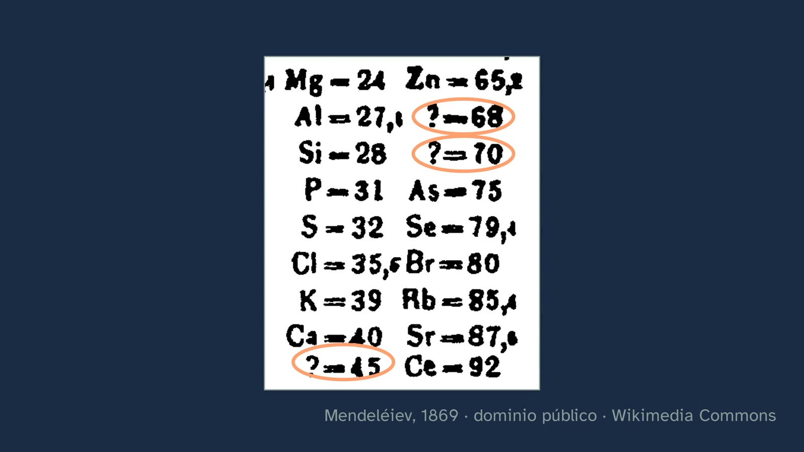
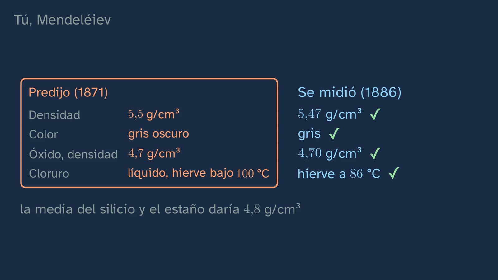
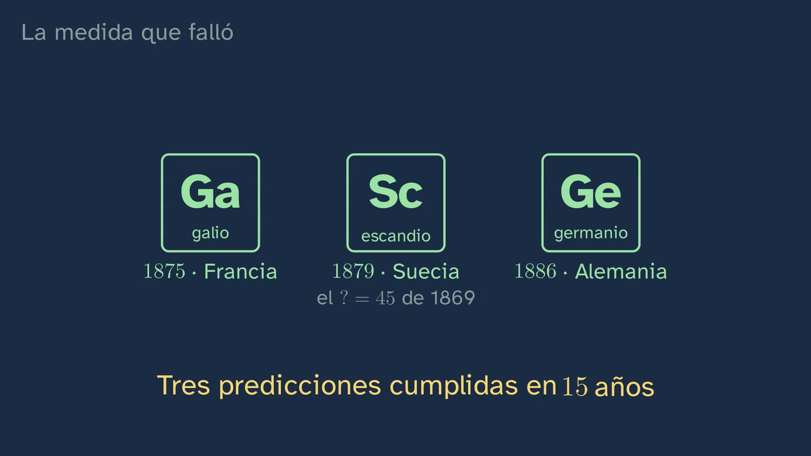

Mendeleev's gaps
In a nutshell
The class opens the topic with a question: can you predict something nobody has ever seen? It follows how nineteenth-century chemists looked for families of elements (Döbereiner's triads, Newlands' octaves) and stops at what made Mendeleev's table different: he left gaps and described what was missing. Students make the germanium prediction themselves, compare it with what was measured fifteen years later and see the original 1869 table with its gaps. It closes with two cases looked at together: gallium, where the first measurement failed and the prediction was right, and tellurium, where the measurement was good and it was Mendeleev who was wrong to doubt it. The lesson: neither theory nor measurement is right by decree.
Objective. By the end, students will be able to explain how the elements were grouped by their properties before the atom was known, from Döbereiner to Mendeleev, and why predicting gallium and germanium turned the table into a tool for anticipating properties.
For readers outside Spain: the Bachillerato is the last two years of secondary school (ages 16–18). The video is in Spanish, with English subtitles; the images on this sheet come from the video and keep their Spanish text. In Spain the decimal separator is a comma: 6,94 means 6.94.
Curriculum
Spain's Royal Decree 243/2022, Physics and Chemistry (consolidated text in the Official State Gazette, BOE, checked on 27/09/2026). Our translation of the official Spanish text.
| Element | What the decree says | Where the class works on it |
|---|---|---|
| Core knowledge (block A) | "Development of the periodic table: historical contributions to its present form and its importance as a tool for predicting the properties of the elements." | The whole class |
| Specific competence 2 | "To reason soundly, using scientific thinking and the skills related to the work of science, applying them to observing nature and the environment, asking questions and forming hypotheses, and validating them through experimentation, inquiry and the search for evidence." | The germanium prediction and the cases of gallium and tellurium |
| Criterion 2.1 | "To formulate and test hypotheses as answers to different problems and observations, handling experimental work, inquiry, the search for evidence and logical-mathematical reasoning with ease." | You, Mendeleev: the germanium prediction |
| Criterion 2.2 | "To use different methods to find the answer to a single question or observation, comparing the results obtained and thereby making sure they are consistent and reliable." | The measurement that was wrong: gallium's second measurement |
What students bring from lower secondary (ESO): protons, neutrons and electrons; atomic number; what a chemical element is.
How the class is built
Video chapters
About twelve minutes, in nine chapters. It follows the channel's learning principles (in Spanish): each idea is predicted before it is seen and backed by documents and data.
| Chapter | What happens | Why this way |
|---|---|---|
| What we'll see | Abril introduces the topic and the map of its six classes; two are lab classes. | Knowing where you are and where you're going organises what you learn. |
| The question | In 1871 Mendeleev describes an element nobody has seen; in 1886 germanium turns up. | A real story with a surprising ending makes you want to know how. |
| What you already know | The atomic number, and that Mendeleev did not know it: he only had masses and properties. | Retrieving what they know and placing the problem with the tools of the time. |
| Families of elements | Lithium, sodium and potassium; Döbereiner's triad, worked out by the students; Newlands' octaves and why they failed. | First the intuition (the resemblance), then the attempts to order it, with their mistakes. |
| The gaps | Arsenic is not like aluminium: Mendeleev moves it under phosphorus and leaves two gaps. The original 1869 table. | The key idea seen in a concrete case and backed by the document. |
| You, Mendeleev | Students predict the mass of the missing element (the average gives 73.4; Mendeleev wrote 70 in 1869 and 72 in 1871) and compare their sheet with what was measured in 1886. Density shows that averaging was not enough. | Doing it yourself turns the anecdote into a method, and seeing where the average fails keeps it from becoming a recipe. |
| The measurement that was wrong | Gallium: 5.9 predicted, 4.7 measured with 64 mg (May 1876) and 5.94 a few months later, the same year, with about nine times more metal. Note: in the video, "the same year" is 1876, not 1875, the year of the discovery; it is worth saying so in class. The legend (that Mendeleev asked for it to be repeated) is separated from what is documented. And an open question: was it the predictions that convinced chemists? | Science cross-checks; and what is disputed is presented as disputed. |
| Why it worked | Tellurium and iodine, with the "Te = 128?" of the original table, and Moseley (1913–1914): the true order is that of the atomic number. | The typical mistake, taken apart with the history that explains it, in contrast with gallium. |
| Practice and keep thinking | Recap, three exercises, an open question and the announcement of the lab class. | Spaced practice: the solutions open the next class. |

A plan for a 50-minute lesson
| Minutes | What to do |
|---|---|
| 0–5 | No video: can you predict something nobody has ever seen? One answer each, written down. |
| 5–11 | Video from 0:00 to 4:03 (up to "The gaps"). At the triad calculation, pause and let them do it. |
| 11–41 | The activity "Play at being Mendeleev", with the cards and the prediction of the two gaps. |
| 41–50 | Video from 4:03 to 10:55: the gaps in the 1869 table, their prediction against germanium's, gallium and tellurium. The last chapter (10:55 to 12:31, with the exercises and the open question), at home, with the worksheet. |
Typical mistakes and how they are handled
- "Mendeleev ordered the elements by atomic number." He could not: protons were unknown. He ordered them by mass, and sometimes broke that order because the properties demanded it (tellurium before iodine). He thought tellurium's mass had been measured wrongly ("Te = 128?" in his table); it had not. Moseley's X-ray work (1913–1914) showed that the true order is that of the charge of the nucleus, the atomic number; that this number counts the protons was understood later.
- "Mendeleev invented the periodic table on his own." The class shows Döbereiner and Newlands, with their successes and limits. Lothar Meyer reached a very similar table independently (they shared the Davy Medal in 1882) and also left gaps (in 1864, one after silicon, with mass 73), but he did not describe what the missing elements would be like (Boeck, 2019).
- "If the measurement does not match the theory, the theory is wrong" (or the other way round). With gallium, the first measurement failed; with tellurium, the rule of ordering by mass did. Cross-checking is part of the method.
- Reading every question mark in the 1869 table as a gap. Some mark Mendeleev's doubts ("Te = 128?", "Au = 197?"). The gaps are those with the sign instead of the symbol: ? = 45, ? = 68, ? = 70 and ? = 180.

Questions and solutions
Stop and think (in the video)
- What do all the atoms of the same element have in common? The same number of protons, their atomic number.
- With lithium (6.94) and potassium (39.10), what should sodium have? The average is 23.02; sodium has 22.99.
- Between silicon (28.09) and tin (118.71), what will the missing element weigh? The average gives 73.4; Mendeleev said 72; germanium has 72.63. And what will it be like? (the worksheet asks) In 1871 Mendeleev predicted a dark grey metal with a density of 5.5 g/cm³, an oxide EO₂ with a density of 4.7 and a liquid chloride boiling below 100 °C; in 1886 a grey metal of 5.47 g/cm³ was measured, with GeO₂ at 4.70 and GeCl₄ boiling at 86 °C.
- Gallium's first measurement gave 4.7 and the prediction was 5.9: who was wrong? The measurement, made with 64 mg; repeated, it gave 5.94.
- Why was leaving gaps braver than squeezing in the known elements? Because a gap is a prediction that can be checked and can fail.
Practice (the solutions open class 2)
- The triad of calcium (40.08), strontium (87.62) and barium (137.33). The average of calcium and barium is 88.71: strontium is off by 1.2 %.
- The mass of bromine, from chlorine (35.45) and iodine (126.90). The average is 81.18; bromine has 79.90 (1.6 % less).
- Cobalt weighs 58.93 and nickel 58.69, but in today's table cobalt comes first: why? Because the table is ordered by atomic number, not by mass: cobalt is 27 and nickel is 28. It is the same case as tellurium and iodine (in the 1869 table, what is more, the two share a box: "Ni = Co = 59").

Keep thinking. If a theory gets a risky prediction right, do we know it is true? And if it fails just once? It has no textbook answer, and the class leaves it open. It lends itself to comparing two positions, each with its best argument: Karl Popper's, for whom what makes a theory scientific is that it can be refuted, and a failed prediction, if the failure is confirmed, refutes it (Logik der Forschung, 1934; in English, The Logic of Scientific Discovery, 1959); and Pierre Duhem's, who observed that a prediction never tests a theory alone but together with the measurement and other assumptions, so a failure does not by itself say which of them fails (La théorie physique, 1906; taken up by Quine and Lakatos). The class itself offers both cases: with gallium, Mendeleev was right against the first measurement; with tellurium, the measurement was good and what failed was the rule of ordering by mass.
For teachers: whether it was the predictions that convinced chemists is a question historians debate. It has been studied, among others, by Brush (1996, Isis 87, 595–628, doi:10.1086/357649) and by Scerri and Worrall (2001, Studies in History and Philosophy of Science 32), who weigh predictions against fitting what was already known. The class presents it as debated, with a fact: in 1882, before germanium, the Davy Medal honoured both Mendeleev and Lothar Meyer, who had left gaps in his table without describing what was missing.
A classroom activity
Play at being Mendeleev (30–40 minutes, in groups of three or four).
- Each group gets eighteen shuffled cards with the atomic mass, the formula of the oxide and whether it is a metal, a metalloid or a non-metal, for these elements (CIAAW masses): Li 6.94 (Li₂O, metal); Be 9.01 (BeO, metal); B 10.81 (B₂O₃, metalloid); C 12.01 (CO₂, non-metal); N 14.01 (N₂O₅, non-metal); Na 22.99 (Na₂O, metal); Mg 24.31 (MgO, metal); Al 26.98 (Al₂O₃, metal); Si 28.09 (SiO₂, metalloid); P 30.97 (P₂O₅, non-metal); K 39.10 (K₂O, metal); Ca 40.08 (CaO, metal); As 74.92 (As₂O₅, metalloid); Rb 85.47 (Rb₂O, metal); Sr 87.62 (SrO, metal); In 114.82 (In₂O₃, metal); Sn 118.71 (SnO₂, metal); Sb 121.76 (Sb₂O₅, metalloid).
- Task: order them by mass in rows of five, so that each column holds elements with the same kind of oxide. To keep it simple, hydrogen, the transition metals and the oxygen and halogen families have been removed (the noble gases were not yet known): tell them so.
- When they reach arsenic, the row does not fit: by mass it would go under aluminium, but its oxide (As₂O₅) is like phosphorus's. Groups that leave two gaps have done what Mendeleev did.
- Prediction (competence 2): mass and oxide of the two missing elements. With the averages of their neighbours: 70.9 and X₂O₃ for the one in aluminium's column (gallium has 69.72 and forms Ga₂O₃), and 73.4 and XO₂ for the one in silicon's (germanium has 72.63 and forms GeO₂).
- Discussion (competence 2, criterion 2.2): which group came closest? Why does the average work better for mass than for other properties? (For density it fails: the average of silicon and tin gives 4.81 g/cm³, and germanium's is 5.32 by today's measurements; Winkler measured 5.47 in 1886, the value shown in the video.)
For teachers: class 2 is a lab class (the flame test). If you do it in class, the Royal Society of Chemistry's wooden-splint method avoids the concentrated hydrochloric acid of the wire-loop method.

Sources
- Royal Decree 243/2022, consolidated text (BOE): https://www.boe.es/buscar/act.php?id=BOE-A-2022-5521.
- Royal Society of Chemistry, history of the periodic table: https://periodic-table.rsc.org/history/about.
- Original texts, in Classic Chemistry (Le Moyne College): Döbereiner (1829), https://web.lemoyne.edu/giunta/dobereiner.html; Newlands (1865–1866), https://web.lemoyne.edu/giunta/ea/newlandsann.html; Mendeleev (1869), https://web.lemoyne.edu/giunta/ea/mendeleevann.html.
- The germanium prediction against what was measured in 1886, densities included: Bates College, https://abacus.bates.edu/acad/depts/biobook/Eka-Si.pdf; Winkler's atomic mass: Weinert (2020), Bulletin for the History of Chemistry 45(1), https://acshist.scs.illinois.edu/awards/OPA%20Papers/2022-Weinert.pdf.
- Germanium's density today, 5.32 g/cm³: Royal Society of Chemistry, https://periodic-table.rsc.org/element/32/germanium.
- The density of gallium, with the original quotations by Lecoq de Boisbaudran: Sztejnberg (2022), Revista CENIC, https://www.redalyc.org/journal/1816/181676110008/html/.
- Moseley, H. G. J. (1913). The high-frequency spectra of the elements. Philosophical Magazine, 26, 1024–1034, doi:10.1080/14786441308635052.
- The debate on the predictions: Scerri, E. and Worrall, J. (2001). Prediction and the periodic table. Studies in History and Philosophy of Science, 32(3), 407–452.
- Lothar Meyer and his 1864 gaps: Boeck, G. (2019). Julius Lothar (von) Meyer (1830–1895) and the Periodic System. Substantia, 3(2), suppl. 4, 13–25, doi:10.13128/Substantia-503.
- Brush, S. G. (1996). The reception of Mendeleev's periodic law in America and Britain. Isis, 87(4), 595–628, doi:10.1086/357649.
- Standard atomic weights: CIAAW (IUPAC), https://www.ciaaw.org/abridged-atomic-weights.htm.
- Mendeleev's 1869 table (public domain): Wikimedia Commons, https://commons.wikimedia.org/wiki/File:Periyodik_Tablo_1_Mart_1869.jpg.

About this class
GinCol Lab is a free science channel for curious minds. Abril is an illustrated character with a synthetic, computer-generated voice that does not imitate any known person; the script and this sheet are written by an AI (Claude, by Anthropic) and reviewed by a person before publishing. This English version was translated by the same AI. If you spot a mistake, tell us: learning also means correcting.
This sheet is published under a Creative Commons Attribution 4.0 licence: you can copy it, adapt it and use it in your classroom, crediting GinCol Lab.
How to cite this sheet
GinCol Lab (2026). Mendeleev's gaps. GinCol Lab teacher sheet: Physics and Chemistry · 1st year of Bachillerato · The atom and the periodic table · Class 1 of 6. https://gincollab.github.io/aula/en/fisica-y-quimica/t01-c1/. CC BY 4.0.
GinCol Lab teacher sheet · CC BY 4.0 · Source and errata